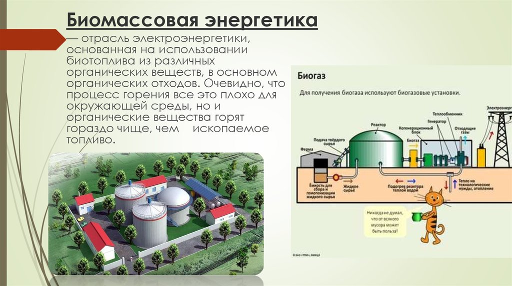

О технологиях производства биогаза

|
Биогазовая установка позволяет создать замкнутое безотходное производство и обеспечивает стабильный доход.
1. Производство биогаза, позволяющее предприятию
самостоятельно вырабатывать необходимые ресурсы для самообеспечения
электроэнергией и теплом, а так же при необходимости и соответствующей
очистке использовать эти ресурсы в качестве автомобильного топлива.
Производство биогаза – это самый выгодный и экологичный способ
переработки органических отходов.
2. Производство биоудобрения. Известно, что органические отходы, такие, как, к примеру, навоз или барда, не могут сразу использоваться в качестве эффективного биоудобрения – они должны перебродить, чтобы минеральные вещества освободились от органических связей. В обычных условиях этот процесс занимает от трёх до пяти лет, которые сопровождаются н6еприятным запахом и токсичными выбросами, негативно влияющими на здоровье людей и животных. Биореактор, перерабатывающий органические отходы в ходе работы биогазовой установки, позволяет сразу получать высокоэффективные биоудобрения. При этом не приходится загрязнять окружающую среду и ждать результата годами.
Всего в мире в настоящее время используется или разрабатывается около
60-ти разновидностей технологий получения биогаза. Наиболее
распространённый метод — анаэробное сбраживание в метатанках, или
анаэробных колоннах. Часть энергии, получаемой в результате утилизации
биогаза направляется на поддержание процесса (до 15-20 % зимой). В
странах с жарким климатом нет необходимости подогревать метантанк.
Бактерии перерабатывают биомассу в метан при температуре от 25°С до
70°С. Технология получения биогаза связана с интенсивным разложением
органики с помощью специальных коферментов и условий. Жидкие и твёрдые
отходы поступают в биореактор (метатанк), там они сбраживаются и
перемешиваются таким образом, что на выходе получается биоудобрение и
биогаз. Далее биогаз поступает в газгольдеры, очищается и хранится, а
для дальнейшего использования газ поступает в когенерационный блок на
базе биогазогенератора, вырабатывающий электроэнергию и тепло.
Конструктивно, биогазогенераторы - это корпус, разделенный на камеры
перегородками, в которых содержатся и взаимодействуют различные газовые
смеси.
Кстати, сама биогазовая система весьма экономна: потребляет всего 10–15% от производимой энергии зимой и 3–7% летом. А вырабатываемого ею тепла достаточно не только для обогрева коровника, свинофермы или птичника, но и для текущих хозяйственных нужд: получения пара, кипяченой воды, сушки соломы, семян, дров и пр. Возле биогазовых установок выгодно ставить теплицы — излишки тепла могут идти на поддержание нужной температуры. В себестоимости тепличных огурцов, помидоров, цветов 90% затрат — это тепло и удобрения. Получается, что возле биогазовой установки теплица может работать совершенно бесплатно, с максимально высокой рентабельностью.
Как правило, в стандартный комплект биогазовой установки входят емкость гомогенизации (где сырье смешивается в однородную массу), загрузчик сырья, реактор, мешалки, газгольдер (для хранения биогаза), газовый водогрейный котел, насосная станция, сепаратор, бак для удобрений, система контроля и безопасности. Такая установка выдает только биогаз и удобрения. Для комбинированного производства электроэнергии и тепла нужна когенерационная установка.
Мощность электростанции биогазовой установки зависит от масштабов сырьевой базы, выработки биогаза, потребности предприятия в электроэнергии и размера инвестиций. Она варьируется от 1 кВт (бытовые установки) до нескольких десятков МВт. Наиболее рентабельными являются станции средней и большой мощности — от 500 кВт. Биогазовой установки, оснащенные такими станциями, быстрее окупаются. Конечно, чем выше мощность электростанции, тем дороже объект.
Большинство видов сырья можно смешивать. Различие состоит лишь в способах его подачи. Для твердых видов — это шнековые загрузчики, для жидких — приемные резервуары с насосной станцией.
Экономические параметры
Для строительства биогазовой установки в сельскохозяйственной местности, необходимо выяснить и учитывать несколько важных принципиальных вопросов. Выяснить техническую мощность, связанные с этим инвестиции, дать ответы на экономические вопросы, определить размеры устройств, можно только, если ответить на следующие вопросы:
Какая масса субстрата будет поступать (навоз, навозная жижа)? Могут ли быть сброженными другие остатки (ко-ферменты)? Должны ли сбраживаться специально выращенные продукты (например, кукуруза)? Имеются ли площади для производства и хранения ко-ферментов? Экономически, возможно ли предприятие по производству биогаза? Могут ли использоваться остатки, отходы, кроме сельскохозяйственных отходом? Можно ли достигнуть доход, при утилизации этих отходов? Должен ли со-субстрат проходить гигиеническую обработку? Как высоко потребление электроэнергии в вашем предприятии? Какое потребление электроэнергии в год? Как высоко потребление тепла в вашем предприятии? Какое потребление тепла в год? Каковы цены на энергоносители сегодня, в какие цены ожидаются в будущем? Возможны ли дополнительные инвестиции в проект? Какие возможности помощи по инвестициям имеются? Имееются ли возможности для осмотра уже построенного биогазового оборудования (см. референц лист)?
Экономичность биогазовой установки определить довольно
сложно. Поэтому в практике после грубого анализа, производится
детализированное уточнение всех издержек и получение данных о пользе
проекта. Каждое устройство должно тщательно планироваться и оптимально
приспосабливаться к предприятию. При рассчетах необходимо иметь более
реалистичные стоимости, к примеру, для издержек обслуживания, расходов
на ремонт, а также расходов на производство возобнавляемых видов
растений. |